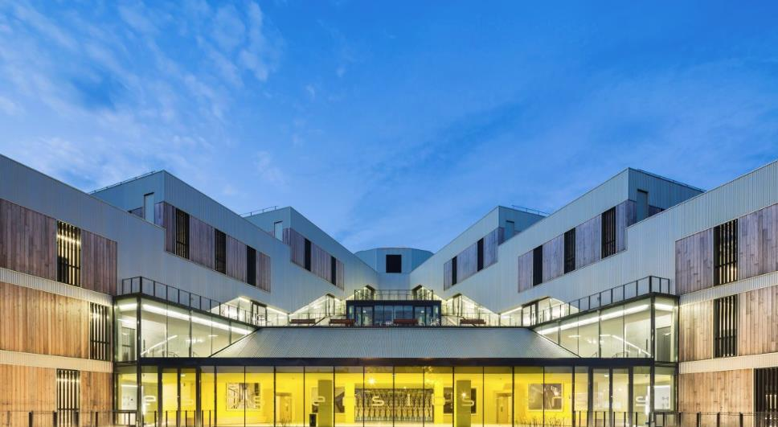
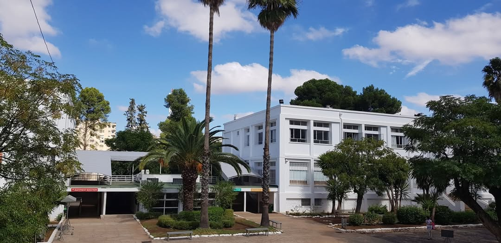

Mon parcours m’a permis de construire progressivement une vision globale de l’industrie, en associant sciences, technologies numériques et approche humaine.
À travers ma formation en Génie Industriel 4.0, je développe des compétences pour accompagner la transformation des entreprises, améliorer les processus et concevoir des solutions adaptées aux besoins des utilisateurs et des équipes terrain.

Formation d’ingénieur orientée vers les enjeux de l’industrie du futur : digitalisation des processus, amélioration continue, qualité, gestion de projets industriels et optimisation des performances.
Cette formation intègre une forte dimension humaine : collaboration avec les équipes terrain, analyse des besoins utilisateurs, conduite du changement et conception de solutions adaptées aux réalités industrielles.
Elle me permet de développer une approche globale de l’entreprise en reliant les technologies 4.0, les processus industriels et les acteurs qui les font vivre.
Acquisition d’un socle scientifique et technique solide permettant d’intégrer le cycle ingénieur.
Développement de compétences en mathématiques, informatique, automatique, électronique et sciences industrielles à travers des projets et travaux en équipe.
Cette période m’a également permis de développer mon autonomie, ma capacité d’analyse et mon aptitude à travailler dans un environnement collaboratif.

Formation suivie dans le réseau AEFE (enseignement français à l’étranger).
Spécialités : Mathématiques et Physique-Chimie, avec l’option Mathématiques expertes.
Cette formation scientifique m’a permis de développer une capacité de raisonnement logique, d’analyse et de résolution de problèmes, constituant une base solide pour poursuivre des études d’ingénieur.